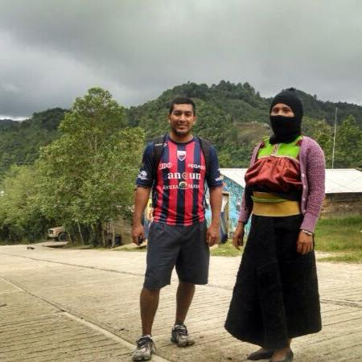
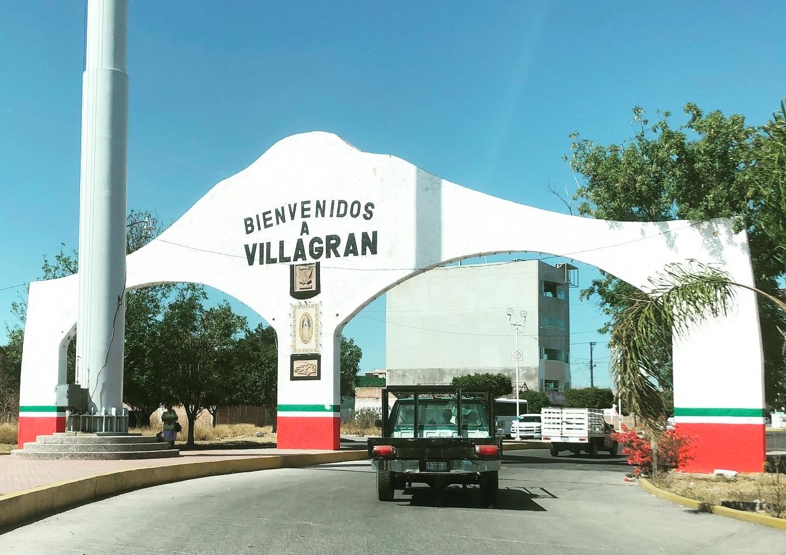
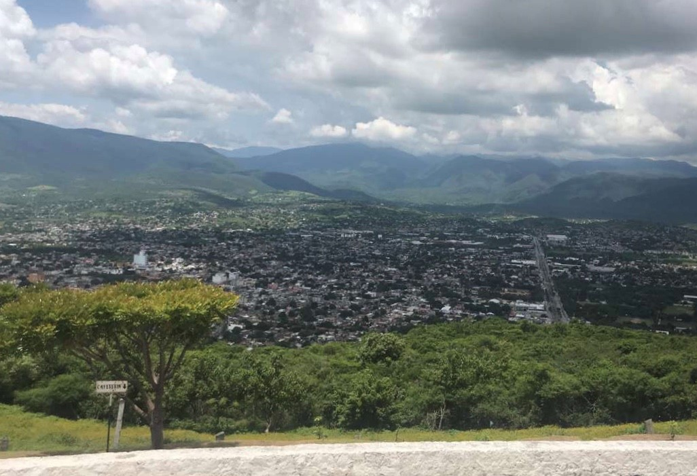
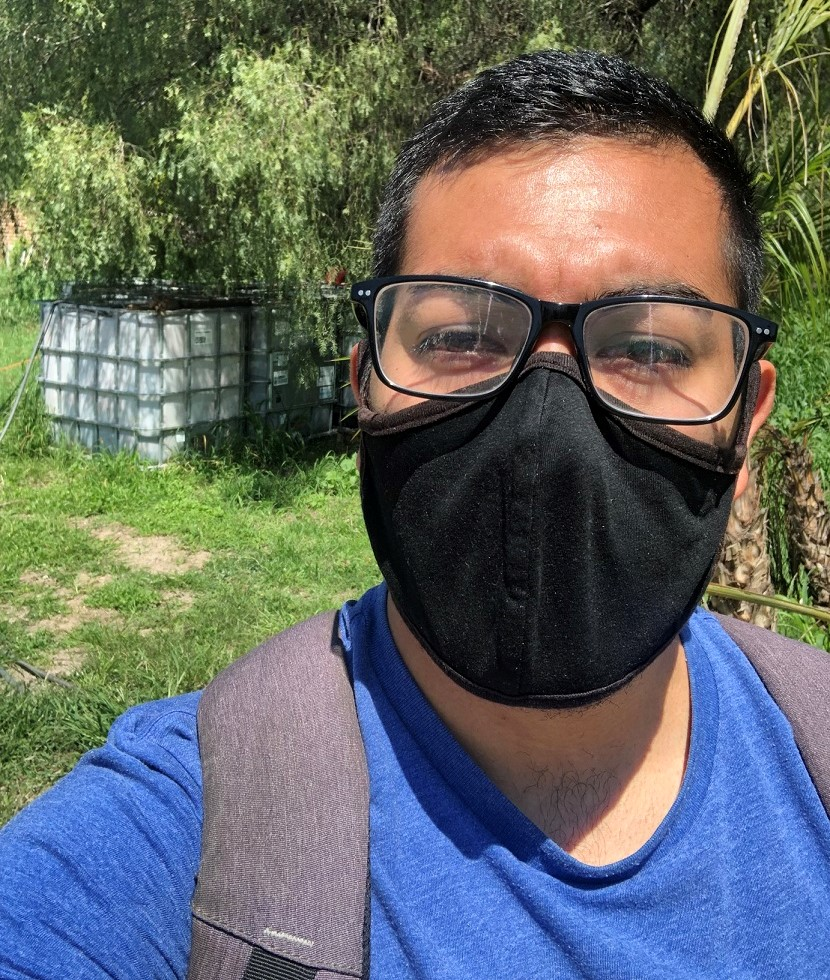
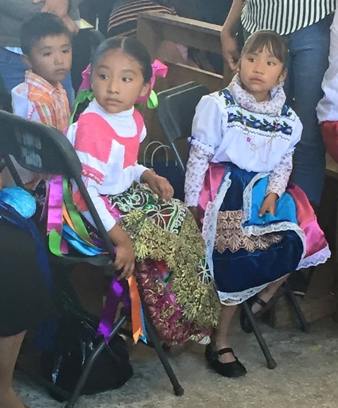
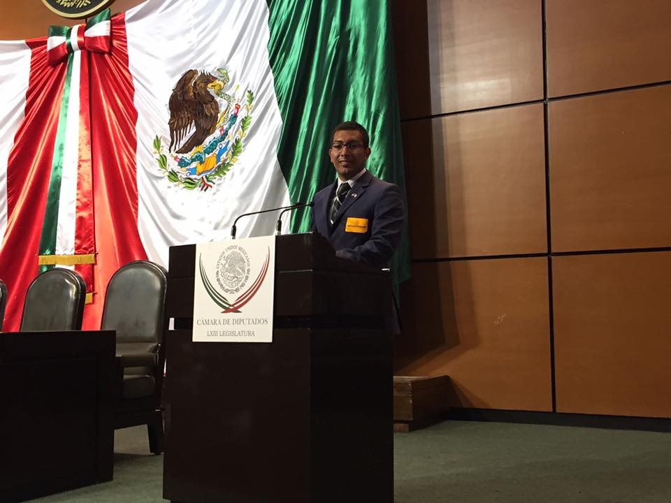
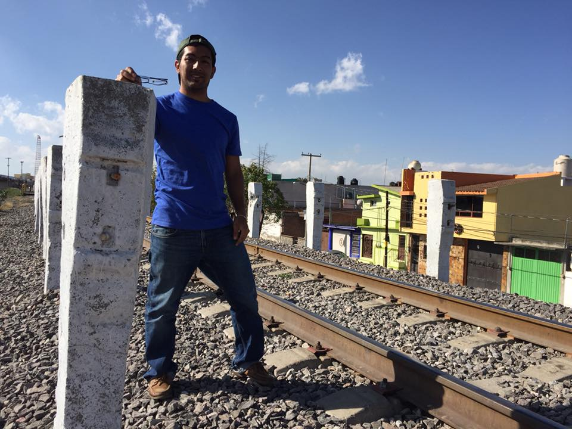
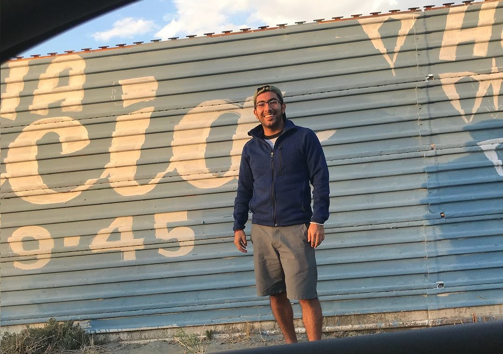
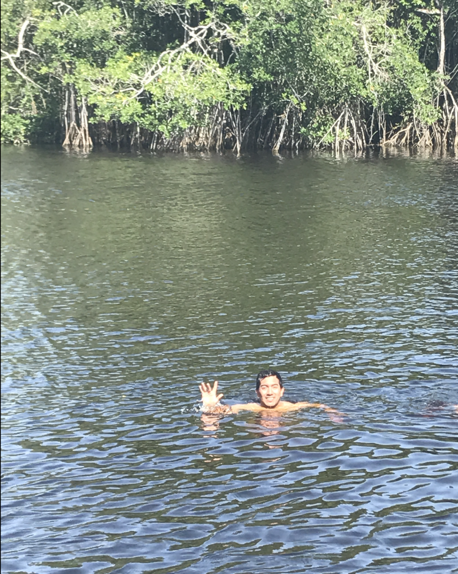
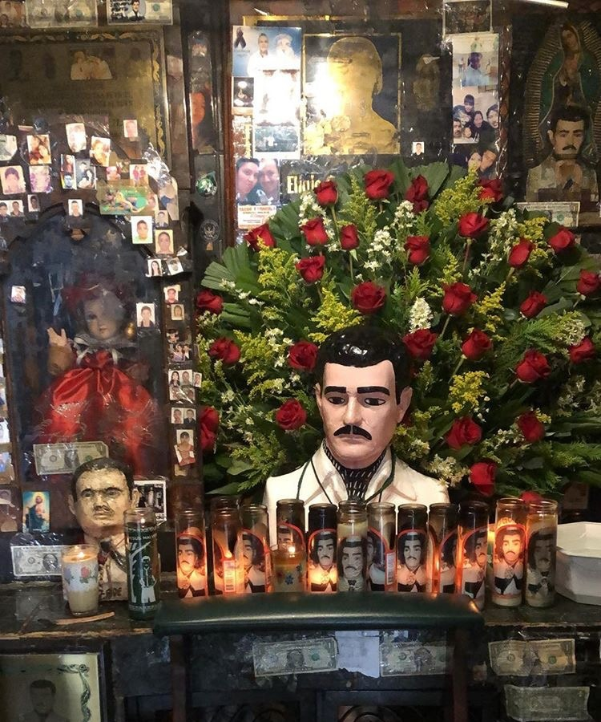

White House 2016
Research Assistant at ONDCP
Research Assistant at ONDCP

Visiting a Zapatista community

Conducting fieldwork in the "Bermuda Triangle" of oil theft

Exploring the city where Mexican Independence was declared and where 43 students were forcibly disappeared

Stopping by a clandestine gas station selling stolen gasoline (huachicol)

Spending a few days in a Purépecha indigenous community

Speaking to congressmen about legislative procedures

Volunteering at a migrant shelter along the train tracks of The Beast

Walking along the US-Mexico border wall
Attending a EZLN gathering led by Subcomandante Marcos

Informally crossing an international border

Visiting La Capilla de Malverde
created with
Website Builder Software .